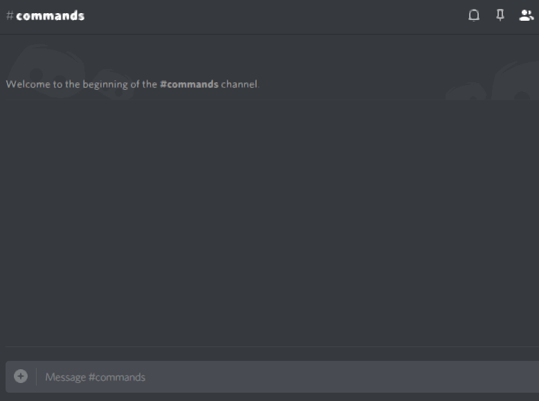
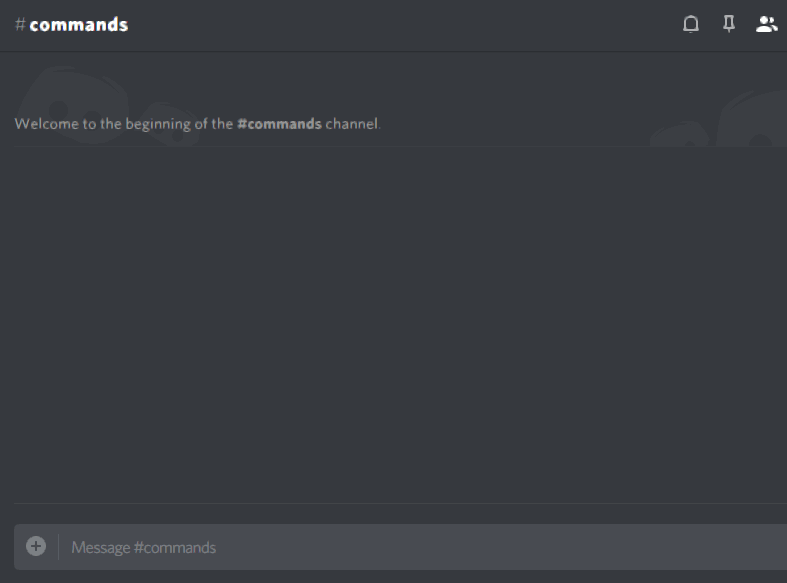
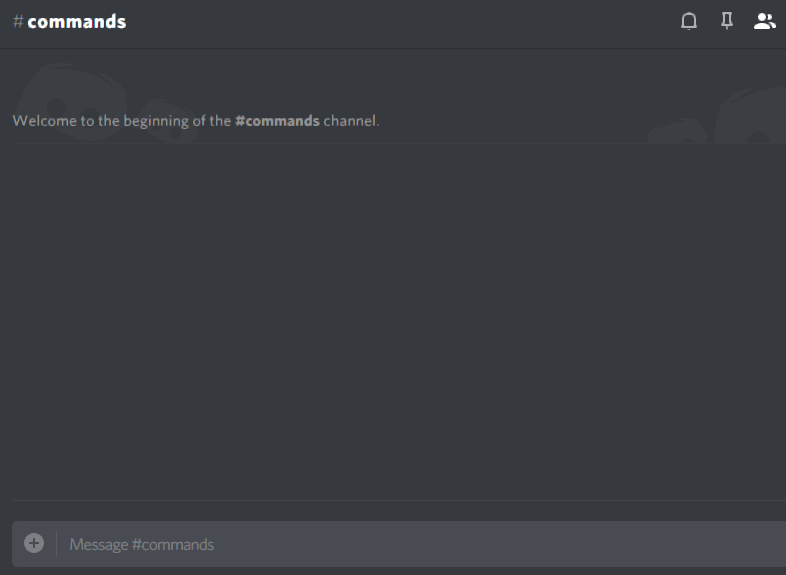
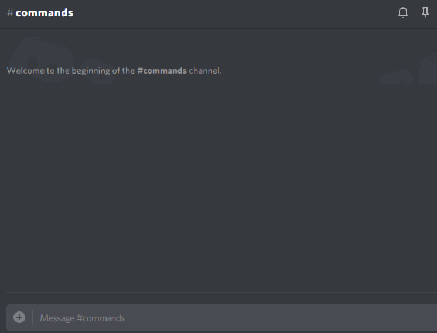

Changelog
Update 3.7
This version is effectively a complete overhaul of the bot. Almost half the code has been changed for better user experience and performance. There were also many stability improvements so Nano doesn't just crash when something I didn't predict happens. Also, Nano is now prepared for the increasing amount of servers with support for sharding which splits the server load between multiple instances, so you can always get the fastest response time ;)
Command Syntax Changes
As I was going over the commands, I realized that some of them had weird syntax: !softban, for example.
It would only accept mentions, not names or ids. This is the reason I decided that there should be a global way of how users are passed in commands.
From now on, most (if not all) of commands that take a @mention as a parameter now accept names and some even IDs.
Hopefully that clears up the confusion (some commands had this before, some didn't).
I also noticed !softban had weird order of parameters - time | @mention, which didn't really make sense.
So I changed it to a more sensible and sane @mention/name for [time] or with the good ol' | as a separator: @mention/name | [time].
Another thing that was changed is the weird syntax of !vote start.
You used to have to enclose your title in two quotation marks, but now it's as simple as title|option1|option2. Told ya, simple.
Emojis are coming, run!

Good on ya, The Emoji Movie.
Anyway, many commands, including !vote start, !vote end, !urban, !wiki and many more
received a visual overhaul with emojis to split up the text (it's just more pleasant to look at, I guess).
Most of commands that don't have them yet will get them in a smaller update down the road.
Rip Commands
Here's the commands that were removed: !steam friends and !role replaceall. Let me explain why.
So, here's a little story: one day Simon woke up. He told himself: "It's a nice day outside, let's write some code". You get the idea.
If I remember correctly, there weren't many commands at that time, so I was actively looking for something to implement, because I felt like something was missing.
So I open Spotify and put on some calming track. At that time one of Steam's notifications pops up and then I remember: "I wonder: can I do something with Steam?".
Fast-forward to a few minutes of googling, I found a steam library for Python (the programming language Nano is written in), and I said to myself: "Lets add ALLL the commands."
So I added user, game and friend search, because why not. Heres the catch: when you implement these commands you don't think: "I wonder, who is really gonna use this?".
Guess what, it wasn't used much if at all, so I decided to remove it. The same goes for !role replaceall
Pages for me, pages for you, pages for everyone!
All commands that you can imagine having a list now have them (!mute list, !selfrole list, !cmd list). This means that if commands don't fit in one message, you can now navigate through pages by reacting to the message.
Multiple Selfroles
Yes, I heard your feedback ;). You can now add selfroles with nano.settings selfrole add [role name] and remove them with nano.settings selfrole remove [role name].
To see all your selfroles, type !selfrole list. Using selfroles is as it was before, eg. !selfrole [role name].
Passing The Turing Test

Ok, maybe not that good.
Before this, conversation with Nano used to be very limited (as in, if one character was wrong, Nano wouldn't know wtf you were talking about).
This system is now improved and you can say the sentences a little differently and Nano will still know what's the question. In future updates, I'll add more responses as well.
Still, don't expect it to be like a human, conversation is purely for fun.
Permission Changes
All Nano Admins now have access to commands that Nano Mods can use. Not sure why this was the way it was. Thanks for pointing that out, Silver79!
Other style changes, etc...

!rip now doesn't mention people anymore (it was annoying, you'd get a double mention everytime you were mentioned in a !rip command)
The voting system received an overhaul, but that caused incompatibility with the old one, so all polls are going to be removed with this update.
!setup now edits the messages to display success of a step.
Aside from visible changes, there are also a lot of bugfixes included in this update.
You can now have a space in your prefix! You might have noticed that Discord strips away spaces at the end of messages, which meant you couldn't do nano.changeprefix pls with a space.
Well, now you can! Use %20 instead of the space at the end: nano.changeprefix pls%20.